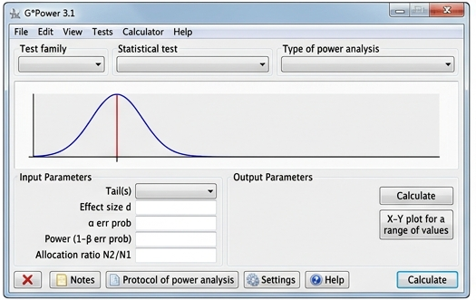
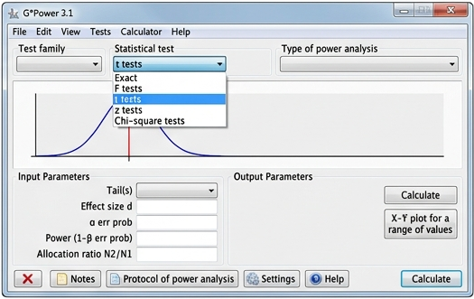
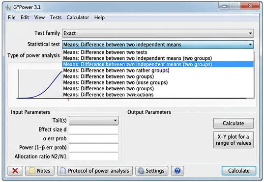
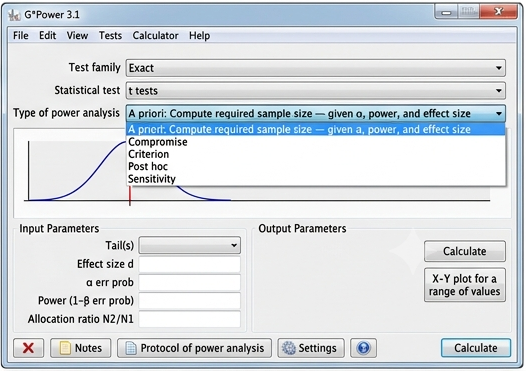

Power Analysis and Sample Size Determination Using G*Power
In the previous lessons, we learned several methods for determining sample size, including Taro Yamane's Formula, Cochran Formula, Fisher's Formula, Krejcie and Morgan Formula, Jacob Cohen's approach, and Samuel B. Green's Formula.
Although these methods remain valuable, researchers today commonly use statistical software to determine sample size. One of the most widely used applications is G*Power, a free program that performs power analysis for many statistical tests.
G*Power enables researchers to calculate the minimum sample size before collecting data, helping ensure that studies have enough participants to detect meaningful results.
G*Power was originally developed by Franz Faul and his colleagues at the University of Dusseldorf, Germany. The software was created to provide researchers with an easy and accurate way of performing statistical power analysis without requiring complex manual calculations.
Since its first release, G*Power has become one of the most widely used statistical applications in education, psychology, medicine, business, and the social sciences. Because it is freely available, it is frequently used by undergraduate students, graduate students, and professional researchers around the world.
Modern versions of G*Power support a wide range of statistical procedures including t-tests, ANOVA, correlation, regression, chi-square tests, F-tests, and many others.
G*Power is a free statistical software application designed to perform power analysis. It helps researchers determine the required sample size before conducting a study or evaluate whether an existing sample size is sufficient for a particular statistical test.
Unlike the manual formulas discussed in previous lessons, G*Power performs calculations automatically based on the research design and statistical assumptions selected by the researcher.
| Type | Purpose |
|---|---|
| A Priori | Determines the required sample size before data collection. |
| Post Hoc | Calculates the statistical power after the study has been completed. |
| Sensitivity | Determines the smallest effect size that can be detected. |
| Compromise | Balances the risks of Type I and Type II errors. |
| Criterion | Computes the significance level needed to achieve a desired power. |
| Information | Description |
|---|---|
| Statistical Test | The statistical procedure to be used (e.g., t-test, ANOVA, correlation). |
| Effect Size | The expected magnitude of the difference or relationship. |
| Alpha Level | The probability of committing a Type I Error (commonly 0.05). |
| Statistical Power | The probability of detecting a true effect (commonly 0.80). |
| Allocation Ratio | The ratio of participants assigned to each comparison group. |
A researcher wants to compare the academic performance of two groups of students after using two different teaching methods.
Before collecting data, the researcher wants to determine the minimum number of participants required for an Independent Samples t-Test.
Instead of performing manual calculations, the researcher uses G*Power to estimate the required sample size.
Launch the G*Power application.

In G*Power, choose the appropriate test family based on the research design. For this study, the researcher selects a t-test because the goal is to compare two independent groups.

The researcher selects the specific test under the t-test category. Since the study compares two independent groups, the correct option is:

For planning the study before data collection, the researcher uses:
This option computes the required sample size based on the desired statistical power and effect size.
The researcher enters the following values:
| Parameter | Value |
|---|---|
| Effect Size (d) | 0.50 (Medium) |
| Alpha (a) | 0.05 |
| Power (1 - β) | 0.80 |
| Allocation Ratio | 1 (equal groups) |

After entering all required values, the researcher clicks the "Calculate" button. G*Power then computes the required sample size automatically.
The analysis shows that a minimum of 128 participants is required to conduct the study properly. This ensures that the research has enough statistical power (80%) to detect a medium effect size at the 0.05 significance level.
If fewer participants are used, the study may not detect meaningful differences even if they exist.
G*Power is a powerful statistical tool used for determining sample size through power analysis. Unlike manual formulas, it automates calculations based on research design, effect size, and desired statistical power. It is widely used in modern research and serves as a practical application of Cohen's power analysis principles.